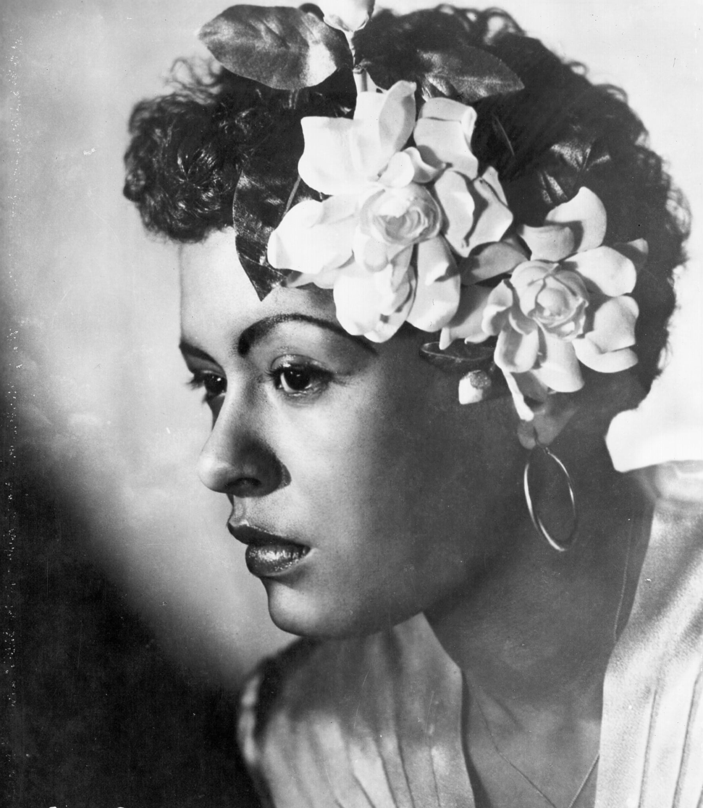
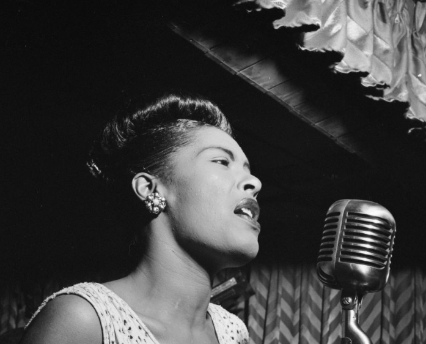
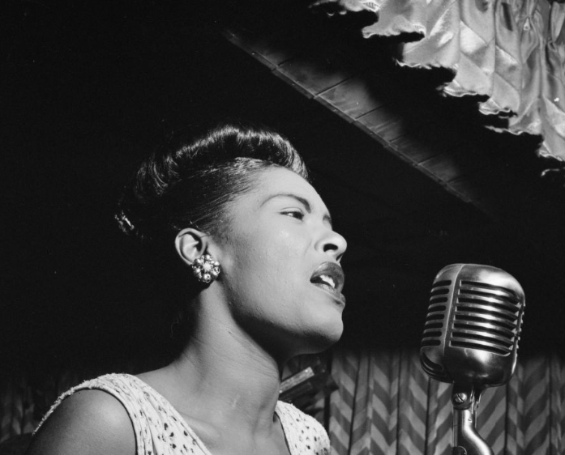

Billie Holiday
"Billie sings the Blues"
Strange Fruit
 

original design by mariavarg(img02)
photos of Billie Holiday(img01, img03)
Click on images to enlarge
https://en.wikipedia.org/wiki/Strange_Fruit
"Southern trees bear a strange fruit/ Blood on the leaves and blood at the root/ Black bodies swingin' in the Southern breeze/ Strange fruit hangin' from the poplar trees/ Pastoral scene of the gallant South/ The bulgin' eyes and the twisted mouth Scent of magnolias sweet and fresh/ Then the sudden smell of burnin' flesh/ Here is a fruit for the crows to pluck For the rain to gather/ For the wind to suck/ For the sun to rot/ For the tree to drop/ Here is a strange and bitter crop"
Strange Fruit
"Strange Fruit" is a song written and composed by Abel Meeropol and recorded by Billie Holiday in 1939. The lyrics were drawn from a poem by Meeropol published in 1937. The song protests the lynching of Black Americans with lyrics that compare the victims to the fruit of trees. Such lynchings had reached a peak in the Southern United States at the turn of the 20th century, and the great majority of victims were black. The song has been called "a declaration" and "the beginning of the civil rights movement". Meeropol set his lyrics to music with his wife and the singer Laura Duncan and performed it as a protest song in New York City venues in the late 1930s, including Madison Square Garden. Holiday's version was inducted into the Grammy Hall of Fame in 1978. It was also included in the "Songs of the Century" list of the Recording Industry of America and the National Endowment for the Arts. In 2002, "Strange Fruit" was selected for preservation in the National Recording Registry by the Library of Congress as being "culturally, historically or aesthetically significant".
Poem and song
"Strange Fruit" originated as a poem written by the Jewish-American writer, teacher and songwriter Abel Meeropol, under his pseudonym Lewis Allan, as a protest against lynchings. In the poem, Meeropol expressed his horror at lynchings, inspired by Lawrence Beitler's photograph of the 1930 lynching of Thomas Shipp and Abram Smith in Marion, Indiana. Meeropol published the poem under the title "Bitter Fruit" in January 1937 in The New York Teacher, a union magazine of the Teachers Union. Though Meeropol had asked others (notably Earl Robinson) to set his poems to music, he set "Strange Fruit" to music himself. First performed by Meeropol's wife and their friends in social contexts, his protest song gained a certain success in and around New York. Meeropol, his wife, and the black vocalist Laura Duncan performed it at Madison Square Garden.